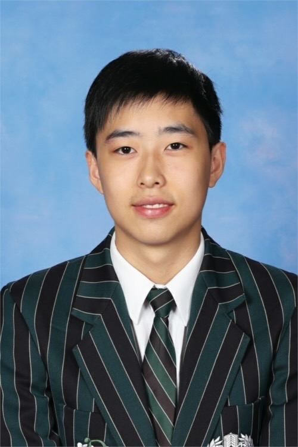
ROBOCUPJUNIOR INTERNATIONAL · VISION SOCCER
We build robots that see the whole field.
Open Legends is a four-student team from Brisbane Boys’ College, representing Australia with two autonomous soccer robots engineered for 360° vision, rapid decision-making and coordinated play.
0Autonomous robots
0Field vision
02025 Australian Nationals
0Student engineers
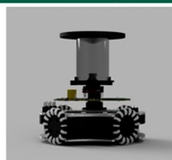
CAMERA: OPENMV VISION: 360 DEG STATUS: READY$ ./launch_open_legends
[00.013] gy-bno055 .......... ONLINE
[00.041] omni-drive ........ ONLINE
[00.087] line-array ........ CALIBRATED
[00.142] vision-pipeline ... LOCKED
> autonomous mode engaged_01 // MISSION
Engineering under pressure.
RoboCupJunior Vision Soccer demands far more than a robot that can move. It must perceive a changing field, calculate an intelligent response and execute that decision in real time — entirely autonomously.
Our platform combines a custom hyperbolic mirror and OpenMV camera, an omnidirectional drivetrain, custom electronics, line sensing, wireless communication and strategy software built around fast, reliable decisions.
// build. test. fail. learn. rebuild.
02 // TEAM
Four disciplines. One system.
Every subsystem is designed, built, tested and refined by students at Brisbane Boys’ College.
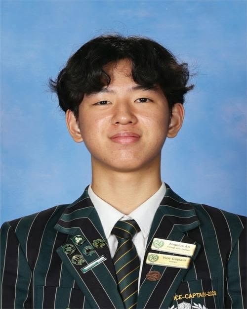
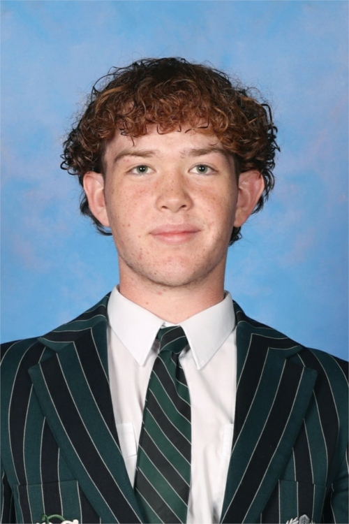
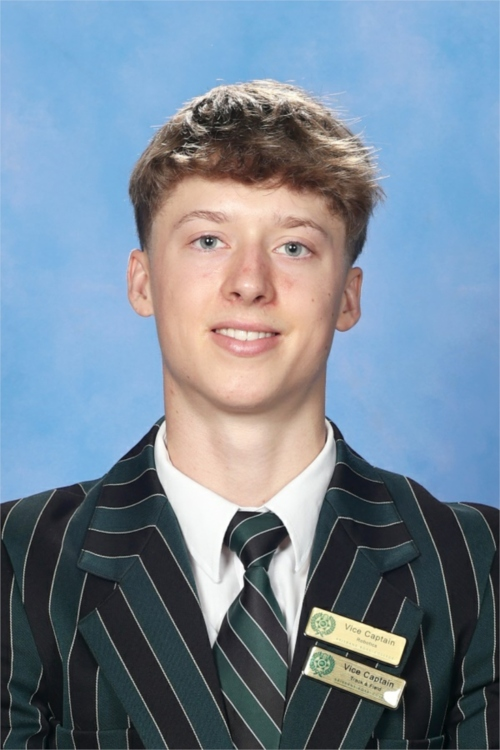
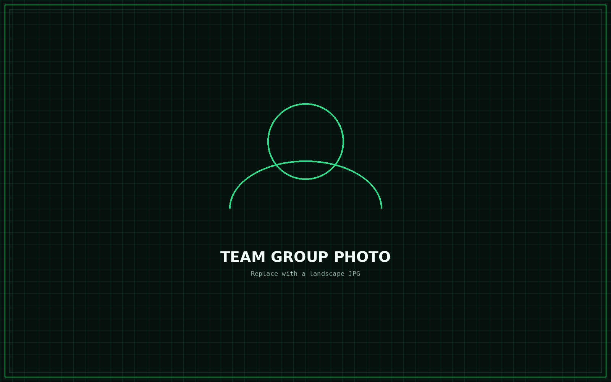
TEAM_OPEN_LEGENDS.JPGBrisbane Boys’ College · Toowong, Queensland
03 // ROBOT
A complete autonomous platform.
Designed in Autodesk Fusion, manufactured through iterative prototyping and controlled by a tightly integrated software-electrical stack.
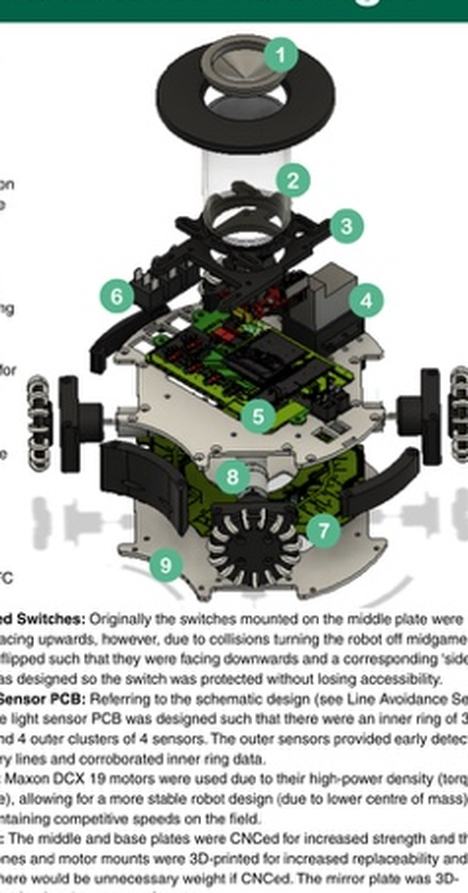
1Hyperbolic mirror
2OpenMV camera
3Custom electronics
4Omnidirectional drive
01
360° vision
A custom mirror maps the entire field into a single camera view for rapid ball, goal and field detection.
02
Custom control stack
Teensy microcontrollers, an OpenMV vision module and C++ logic coordinate perception and movement.
03
Omnidirectional motion
Four driven wheels allow instant translation and rotation without needing to turn first.
04
Field awareness
Line sensors detect boundaries while wireless communication supports coordinated positioning.
vision_pipeline.cpp
One frame. Every direction.
The hyperbolic mirror compresses a 360° view around the robot into the camera image. Software then translates pixel positions into field angles and distances for real-time navigation.
- Custom hyperbolic mirror
- OpenMV camera module
- Angle and distance mapping
- Real-time object detection
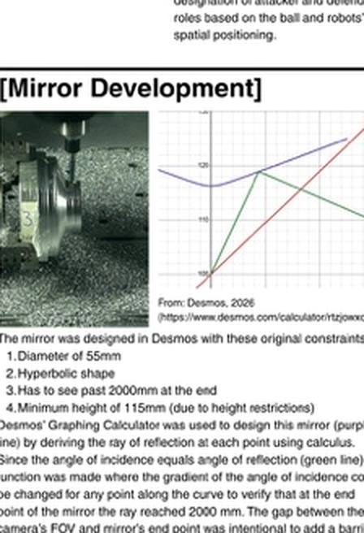
strategy_controller.cpp
Perception becomes action.
Attacker and defender logic transforms sensor data into movement. Orbit control positions the robot around the ball, while line avoidance keeps it safely inside the field.
- Attacker / defender states
- Ball orbit logic
- Line cluster detection
- Real-time motor commands
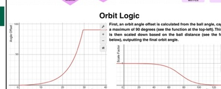
main_controller.kicad_pcb
Signal integrity by design.
The revised main PCB separates noisy motor power from sensitive logic systems, adds filtering and improves connector access for faster maintenance between matches.
- Separated motor and logic grounds
- Custom sensor PCBs
- Power filtering and switching
- Accessible communication headers
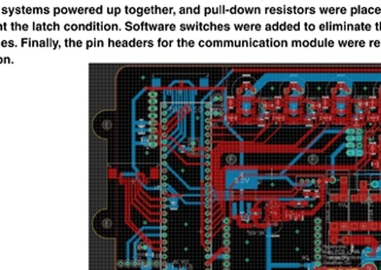
robot_assembly.f3d
Built to be repaired fast.
The second prototype moved from a single-print concept to a modular vertical assembly. Easier access, improved balance and faster battery changes make the robot more practical under competition pressure.
- Modular CNC and printed structure
- Low centre of gravity
- Fast battery access
- Serviceable motor mounts
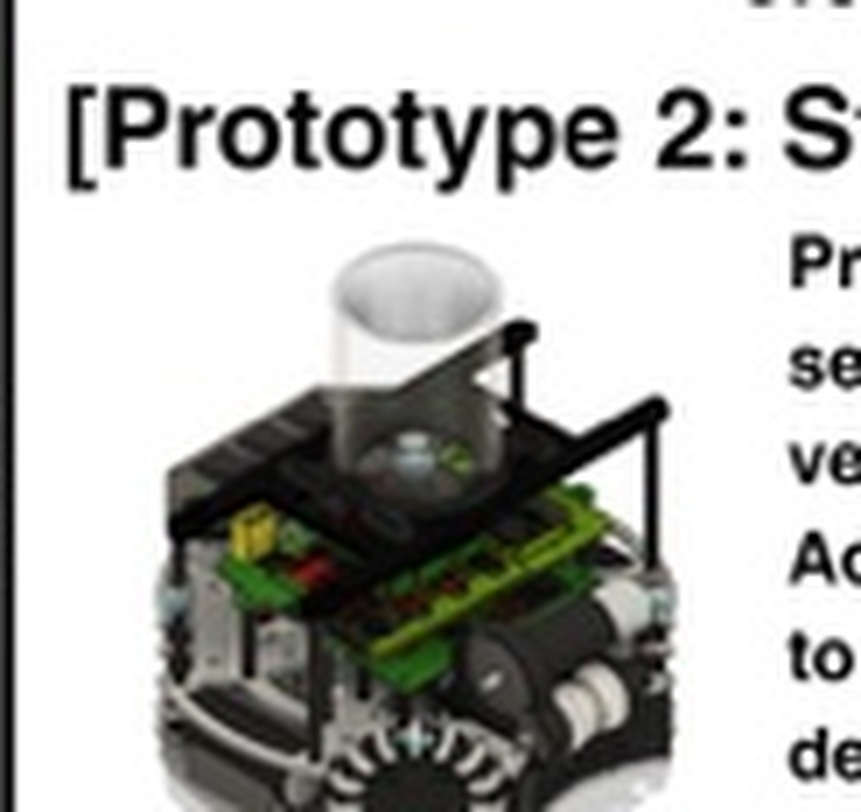
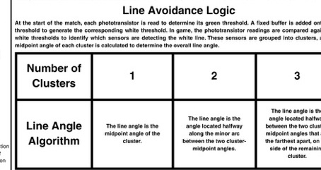
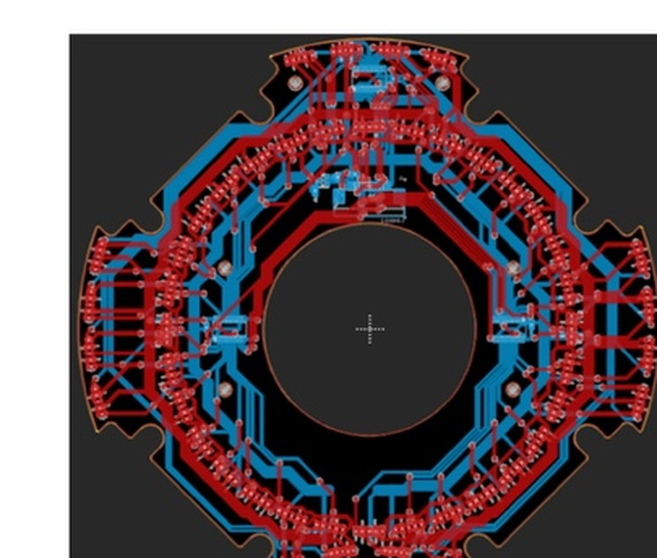
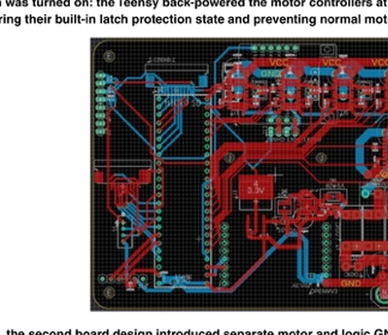
INTERACTIVE // CAD
Rotate the robot in 3D.
FUSION_VIEWER_URL = null
Setup instructions are in README.md
04 // ACHIEVEMENTS
From nationals to the world stage.
Our result at the 2025 Australian National Competition earned a wildcard pathway to international competition.
02
AUSTRALIAN NATIONALS · 2025
Second place nationally.
A major result in Vision Soccer and the performance that opened the door to our 2026 international campaign.
123
Platform development begins
Mechanical, electrical and software systems are developed through two major robot design iterations.
National runner-up
Open Legends places second at the Australian National Competition.
Wildcard international entry
The team prepares to represent Australia in RoboCupJunior International Vision Soccer.
Build beyond the result
Refine reliability, increase match intelligence and share actionable engineering knowledge with the wider robotics community.
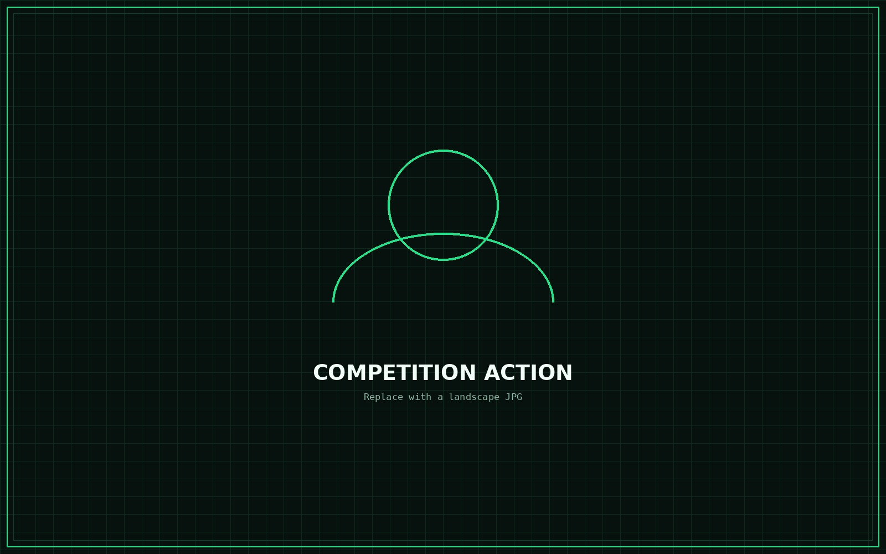
COMPETITION_MODE = TRUEReplace this image with your strongest action photo
DOCUMENTATION // POSTER
The full engineering story.
Explore the competition poster for design methods, software strategy, PCB development, costs and prototype results.
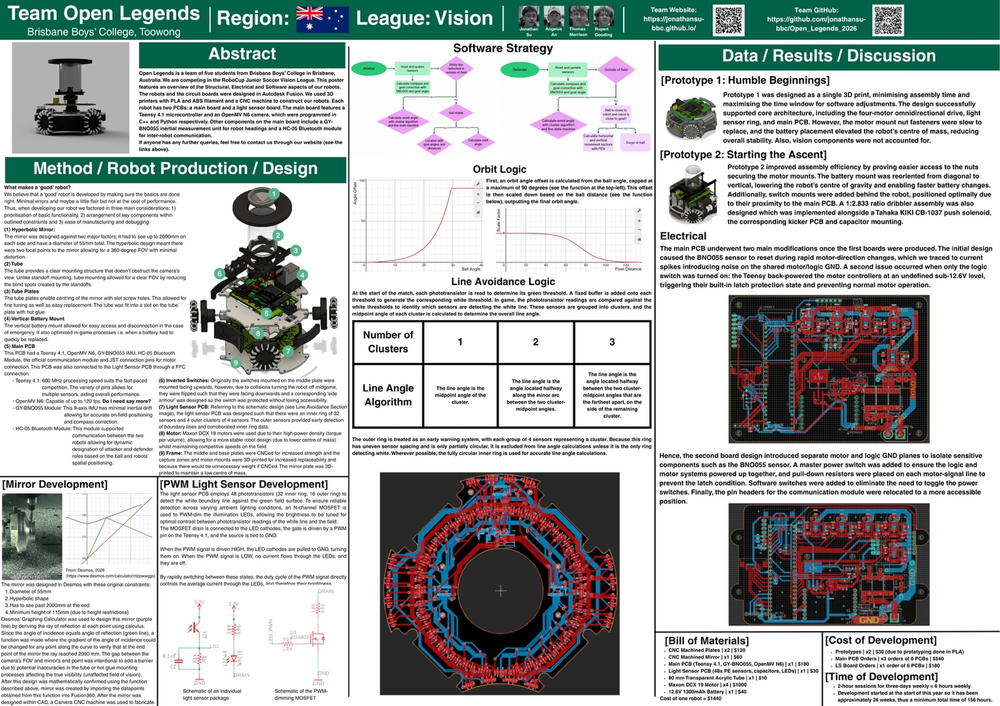